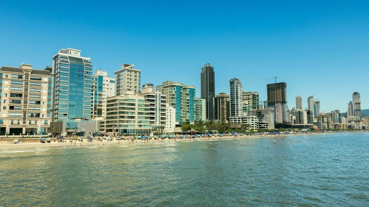
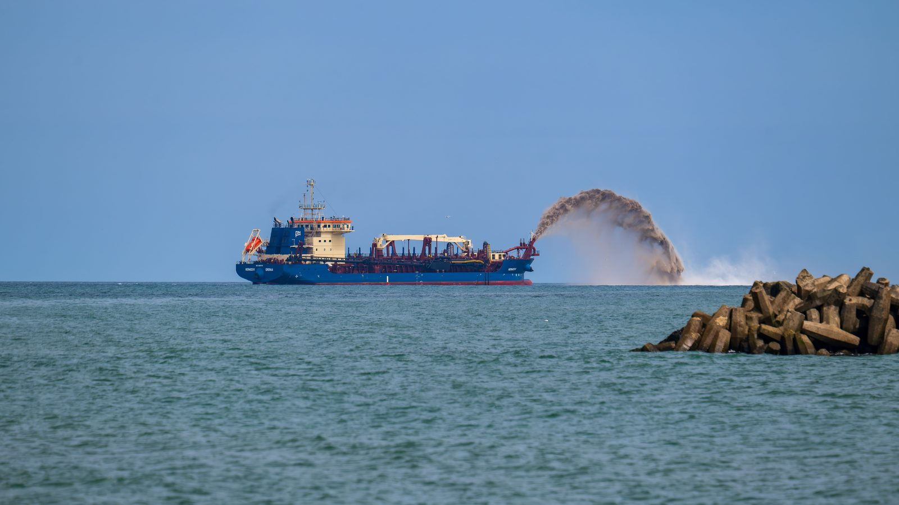
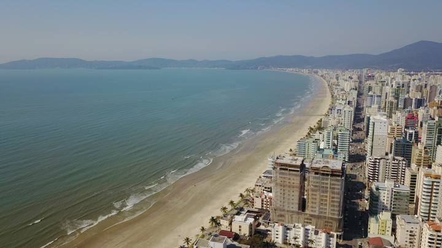
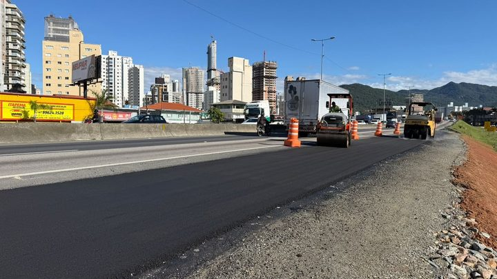

Itapema · InfraestruturaAlargamento da Meia Praia chega à segunda metade de agosto sem início anunciado
A primeira vez que contamos que a data de início tinha passado em branco.
O Governo de Santa Catarina anunciou nesta terça-feira, 6 de outubro, que o Porto de São Francisco do Sul concluiu em Itapoá, no Litoral Norte, o maior engordamento de praia já feito no país em extensão: 7 milhões de metros cúbicos de areia ao longo de 8,8 quilômetros, por R$ 333 milhões, em 12 meses de obra. Em Itapema, o alargamento da Meia Praia, orçado em R$ 60 milhões e anunciado pela Prefeitura para começar em agosto, continua sem contrato. Lemos os 678 contratos que a Prefeitura publicou no Portal Nacional de Contratações Públicas entre 1º de janeiro e esta terça: nenhum tem por objeto engordamento, alargamento ou alimentação artificial de praia. O maior de todos é de R$ 9,82 milhões, de pavimentação. E a última notícia da Prefeitura sobre o licenciamento da obra é de 7 de janeiro, há 272 dias.
Em 30 segundos · Modo de Leitura, formato original Santa Informa
Itapoá fica no Litoral Norte de Santa Catarina.
Lá acabou de terminar uma obra grande.
Jogaram areia na praia para alargar a faixa.
O nome técnico é engordamento.
Foram 7 milhões de metros cúbicos de areia.
Ao longo de 8,8 quilômetros de praia.
Custou R$ 333 milhões.
Começou em outubro de 2025.
Terminou agora, em outubro de 2026.
Foram 12 meses.
Quem fez foi o Porto de São Francisco do Sul.
A areia veio da dragagem do próprio porto.
O Estado diz que é a maior do Brasil em extensão.
Itapema tem uma obra parecida no papel.
É o alargamento da Meia Praia.
São 4,75 quilômetros de orla.
A faixa ganharia de 20 a 60 metros.
A conta prevista é de R$ 60 milhões.
Metade da Prefeitura, metade do Estado.
A areia sairia de uma jazida no mar.
Fica a 19 quilômetros da costa.
A Prefeitura anunciou início em agosto de 2026.
O prazo de execução seria de 4 meses.
Fomos ler a base de contratos públicos.
Itapema publicou 678 contratos em 2026.
Nenhum é do engordamento da praia.
O maior contrato do ano é de R$ 9,82 milhões.
É a pavimentação de um trecho da SC-102.
Tem uma ação do Ministério Público no meio.
É de 11 de junho.
O MP quer um estudo ambiental mais completo.
Não localizamos decisão publicada sobre ela.
Faltam 56 dias para 1º de dezembro.
InfraestruturaPublicada em Redação Santa Informa

O Governo de Santa Catarina publicou nesta terça-feira, 6 de outubro, que o Porto de São Francisco do Sul concluiu o engordamento das praias de Itapoá, no Litoral Norte do estado. Pelo anúncio oficial foram 7 milhões de metros cúbicos de sedimento por 8,8 quilômetros de praia, ao custo de R$ 333 milhões, entre outubro de 2025 e outubro de 2026. A areia saiu da dragagem do próprio porto, e o Estado chama a obra de maior do país em extensão nesse tipo de intervenção. Entrou junto uma duna de 26 metros de largura, com restinga plantada em cima.
Itapema tem projeto do mesmo tipo, menor, e ele continua no papel. O alargamento da Meia Praia prevê 4,75 quilômetros de orla, ganho de 20 a 60 metros na faixa e 416 mil a 498 mil metros cúbicos de areia tirados de uma jazida a 19 quilômetros da costa. A conta é de R$ 60 milhões, metade da Prefeitura e metade do Estado, com 4 meses de execução. A própria Prefeitura publicou, em 7 de maio, que a obra começaria em agosto de 2026.
Lemos o objeto dos 678 contratos que a Prefeitura publicou no Portal Nacional de Contratações Públicas entre 1º de janeiro e esta terça-feira. Nenhum trata de engordamento, alargamento, alimentação artificial de praia ou dragagem. O maior do período é de R$ 9,82 milhões, de 9 de abril, para pavimentar um trecho da SC-102. Os R$ 60 milhões do engordamento seriam mais de seis vezes isso, e viraria de longe o maior contrato do ano na cidade. Há uma obra de orla contratada em 2026, mas é outra: a reurbanização da orla do bairro Ilhota, de 19 de agosto, com vigência até novembro de 2027.
Procuramos no site da Prefeitura todas as notícias sobre o assunto. A mais recente sobre o licenciamento é de 7 de janeiro de 2026, quando o IMA analisava a Licença Ambiental de Instalação. São 272 dias, conta nossa. Depois disso o tema só voltou na nota da agenda do governador, em 7 de maio. De lá para cá não saiu mudança de cronograma, resultado de licitação nem previsão nova.
Em 11 de junho, a 1ª e a 3ª Promotorias de Justiça de Itapema ajuizaram ação civil pública contra o IMA e o Município. O pedido é suspender a licença de instalação, a licitação e as obras até que se faça Estudo de Impacto Ambiental e relatório, no lugar do Estudo Ambiental Simplificado aceito pelo IMA. O argumento é o volume de areia, perto de 500 mil metros cúbicos. Na própria nota, o Ministério Público não se coloca contra a obra: diz querer critério técnico consistente numa decisão de efeito duradouro. Procuramos nota da Prefeitura sobre a ação no site oficial dela e não achamos, nem decisão publicada sobre o pedido de urgência, 117 dias depois.
Itapoá reaproveitou areia que a dragagem do porto tiraria dali de qualquer jeito, e Itapema precisa contratar a retirada de uma jazida no mar aberto. Por isso o preço por metro cúbico de uma não serve de régua para a outra. Comparável é a escala: por quilômetro de praia, Itapoá lançou de 7,6 a 9,1 vezes mais areia do que o projeto daqui prevê, conta nossa.
O resumo de 30 segundos está no topo e a versão completa é o texto acima. Aqui ficam as três leituras da casa sobre o mesmo assunto.
Clara, a otimista
A notícia de Itapoá é boa para quem mora aqui, e por um motivo simples: prova que dá certo. Até ano passado, engordar praia nessa escala era coisa que a gente via em reportagem de fora. Agora tem uma obra pronta a algumas horas de carro, com duna plantada e tudo, e com um problema resolvido que nem estava no roteiro, que é dar destino à areia da dragagem do porto.
Para a Meia Praia isso vira referência prática. Quando a obra daqui sair, ela não vai começar do zero: vai começar com um vizinho que já passou por licenciamento, por execução e por plantio, e com gente que sabe o que deu trabalho. Obra pioneira custa caro em erro. A segunda custa menos.
Seu Prudêncio, o criterioso
Merece atenção o calendário. O projeto de Itapema tem prazo de execução de quatro meses e a última data de início publicada é agosto. De hoje até 1º de dezembro faltam 56 dias, e a cidade entra na temporada com a faixa de areia que tem hoje. Isso não é novidade ruim, é informação de planejamento: quem trabalha na orla, quem aluga, quem organiza evento na areia, já pode contar com o cenário atual para este verão.
Vale acompanhar duas coisas específicas. A primeira é a ação civil pública: enquanto não houver decisão sobre o pedido de urgência, a obra fica num lugar incômodo, nem suspensa nem andando. A segunda é o silêncio de documento: nove meses sem nota da Prefeitura sobre o licenciamento é tempo demais para uma obra de R$ 60 milhões que a própria Prefeitura anunciou com data.
Uma sugestão útil, e barata: uma página de acompanhamento no site do município, com a etapa atual, o número do processo e a previsão revisada. Custa pouco e evita que a conversa seja feita no boato. Dito isso, o mérito existe. Itapema conseguiu a licença de instalação, tem metade do dinheiro garantida pelo Estado e tem projeto com jazida mapeada. É mais do que a maioria das cidades da região tem no papel.
Caco, o sarcástico
Itapoá terminou a maior engorda de praia do Brasil no tempo em que a gente aqui terminou de ler o processo. Nem é provocação: lá começou em outubro do ano passado e acabou em outubro deste ano. Dá para marcar no calendário.
Reclamação registrada: a última notícia oficial sobre o nosso licenciamento é de 7 de janeiro. Desde então teve Carnaval, teve inverno, teve eleição de Câmara Mirim, teve 678 contratos assinados na cidade. Nenhum deles de areia.
Mas tá valendo. A licença saiu, o dinheiro está prometido pelos dois lados e a praia continua ali, do tamanho que sempre foi. Se for para fazer errado e ter que fazer de novo, que demore mesmo. Areia a gente joga uma vez só, com sorte.
Fontes: os 7 milhões de metros cúbicos, os 8,8 quilômetros, os R$ 333 milhões, o prazo de outubro de 2025 a outubro de 2026, a origem da areia na dragagem do porto, a duna de 26 metros de largura e 1 a 1,5 metro de altura e as 210 mil das 300 mil mudas de restinga estão em Porto de São Francisco conclui maior engordamento de praia do Brasil, publicado pelo Governo de Santa Catarina em 6 de outubro de 2026. Os 4,75 quilômetros, o ganho de 20 a 60 metros, os 416 mil a 498 mil metros cúbicos, a jazida a 19 quilômetros, os R$ 60 milhões com R$ 30 milhões do município, o prazo de 4 meses e o início previsto para agosto de 2026 estão em Governador cumpre agenda em Itapema com avanços em mobilidade e requalificação da orla, da Prefeitura de Itapema, de 7 de maio de 2026. A etapa do licenciamento, o protocolo de 20 de dezembro e a análise da Licença Ambiental de Instalação pelo IMA estão em Avança processo de licenciamento ambiental para o alargamento da faixa de areia da Meia Praia, da Prefeitura, de 7 de janeiro de 2026, que é a notícia mais recente que localizamos no site do município sobre o tema. A ação civil pública de 11 de junho, as promotorias, o pedido de suspensão, o Estudo Ambiental Simplificado aceito pelo IMA, a exigência de EIA/RIMA e a frase sobre critério técnico consistente estão na nota MPSC atua para assegurar transparência, segurança técnica e proteção ambiental em projeto de alargamento da praia de Itapema. Os 678 contratos, a ausência de contrato de engordamento, o contrato de R$ 9,82 milhões da SC-102 de 9 de abril e o contrato da orla da Ilhota de 19 de agosto saíram da base de contratos do Portal Nacional de Contratações Públicas, lida por nós em 6 de outubro de 2026. Os 272 dias, os 117 dias, os 56 dias, as seis vezes e a razão de 7,6 a 9,1 vezes de areia por quilômetro são contas nossas, feitas em 6 de outubro de 2026.

Itapema · InfraestruturaA primeira vez que contamos que a data de início tinha passado em branco.

Itapema · InfraestruturaO desenho da obra, trecho por trecho, com a conta e o prazo originais.

Itapema · InfraestruturaOutra obra da cidade em que o calendário anunciado não foi o cumprido.